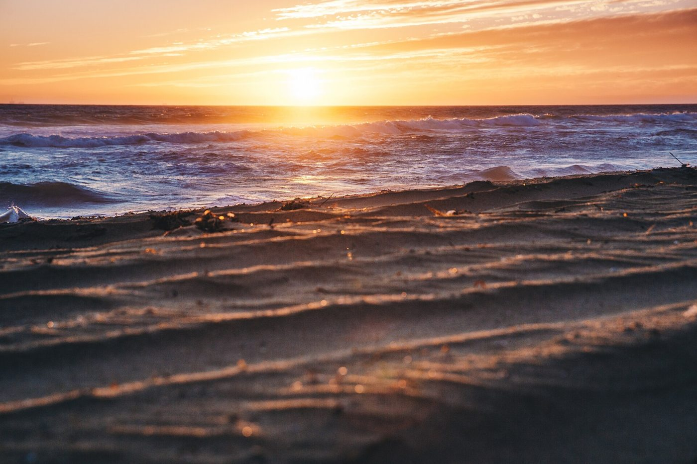
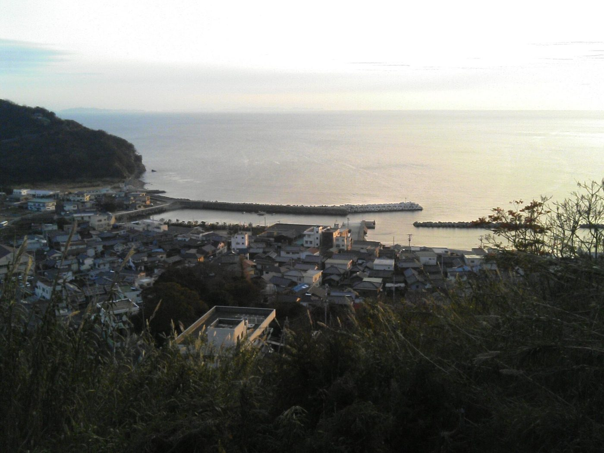
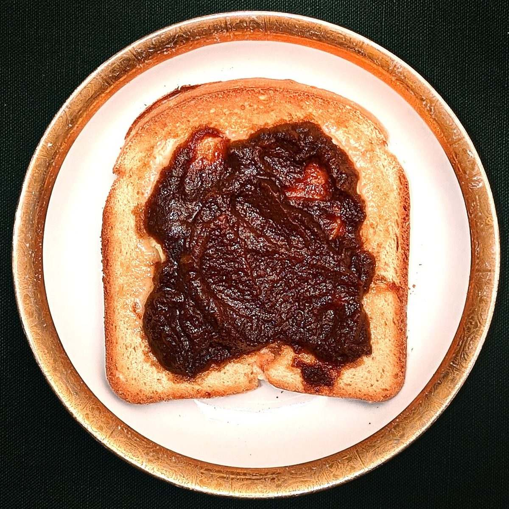
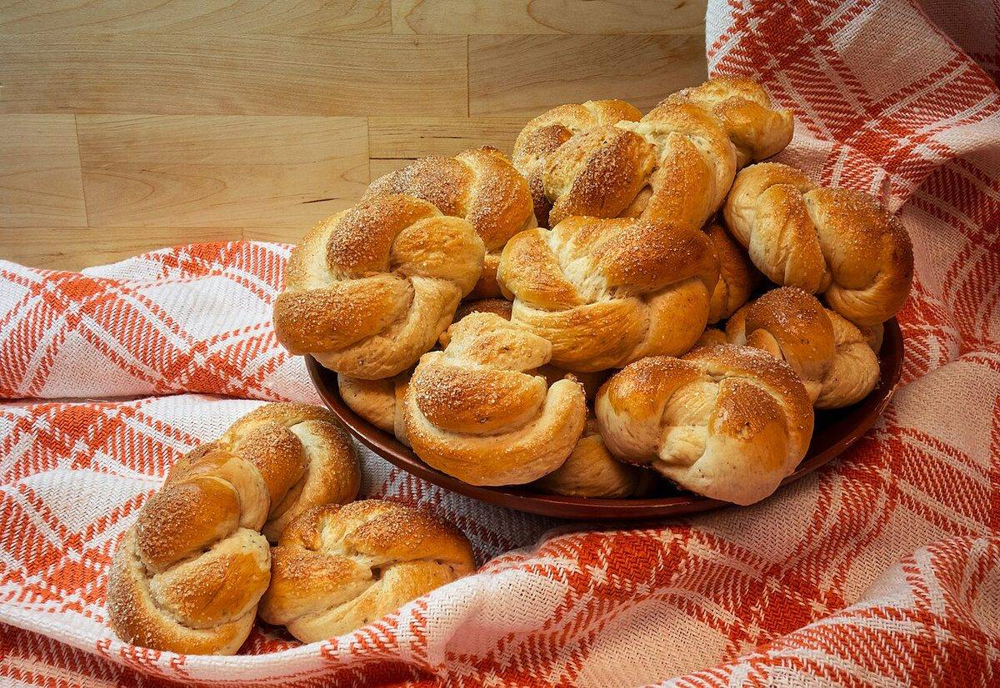
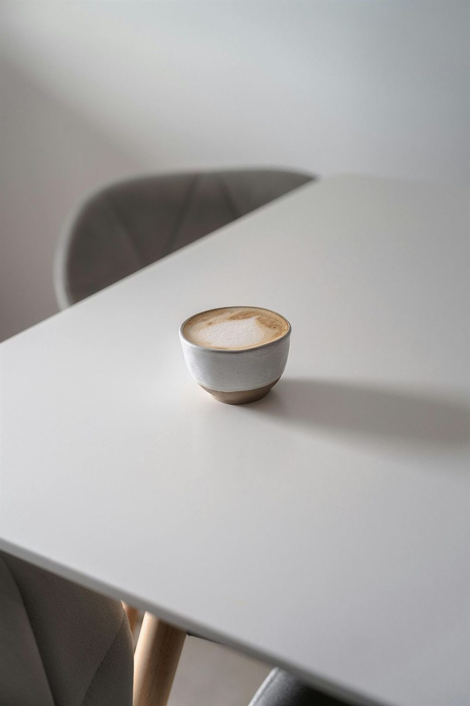

TRICOT / 天橋立 文珠
Tricot
海のそばで、コーヒーを飲みながら、ゆっくり過ごす時間を。
写真はフリー素材のイメージで、店舗の実際の様子・メニューではありません。
お店について
Instagramのプロフィールには「天橋立の海辺にある小さな喫茶店」「海沿いでcoffee time relax time スローな感じでやってます」と紹介されています。
このサイトは、その言葉を軸に、海辺の静けさと一杯のコーヒーの時間を表現した試作です。波の色を思わせる青緑と、流木のような茶色を基調にしました。
店名の意味や由来は確認できていないため、記載していません。営業日はInstagramのハイライトで告知されているようです。

メニュー
喫茶店としてのコーヒー・軽食のイメージを写真で表現しています。実際のメニュー・価格・営業時間は準備中です。








口コミ(イメージ例)
イメージ例
海を眺めながら飲むコーヒーが、とても落ち着きました。のんびり過ごしたい日にまた寄りたいです。
観光で訪れた方(創作)
イメージ例
小さなお店で、ほっとできる雰囲気。散歩のついでに立ち寄れるのがうれしいです。
近くにお住まいの方(創作)
イメージ例
スローな時間が流れていて、ついつい長居してしまいました。
一人で訪れた方(創作)
上記は制作側が作成したイメージ例であり、実際のお客様の声ではありません。
アクセス
- 住所
- 〒626-0001 京都府宮津市文珠541-12
- 電話
- 準備中
- 営業時間
- 準備中
- 定休日
- 準備中
写真クレジット
- sea-harbor.jpg:「Kuchō, Ikata at sunset」 Amake / CC BY-SA 3.0(出典・愛媛県伊方町)
- sea-sunset.jpg:「Sunset reflected in the sea's waves (Unsplash)」 Austin Neill / CC0 1.0(出典・撮影地不明)
- sea-light.jpg:「Sea and sky light」 Adrian Dreßler(Rogerhc 修整) / CC BY 3.0(出典・トルコ)
- black-coffee-white-cup.jpg:「White cup of black coffee」 Jon-Isac Lindberg / CC0 1.0(出典・撮影地不明)
- coffee-cup-on-table.jpg:「Coffee Cup on Modern Table」 Genaro35 / CC0 1.0(出典・撮影地不明)
- latte-heart-wood.jpg:「Rochester, United States (Unsplash d44Vd16m0LM)」 Lesly B. Juarez / CC0 1.0(出典・米国)
- espresso-whipped-cream.jpg:「Espresso with whipped cream (Unsplash)」 Daniel Robert / CC0 1.0(出典・撮影地不明)
- latte-art-cup.jpg:「Latte art on cappuccino (Unsplash)」 Drew Coffman / CC0 1.0(出典・撮影地不明)
- espresso-saucer.jpg:「Espresso Coffee 01」 Jubair1985 / CC0 1.0(出典・撮影地不明)
- coffee-cake.jpg:「Coffee and coffee cake (Unsplash)」 Stephanie McCabe / CC0 1.0(出典・米国)
- toast-spread.jpg:「Toasted oatmeal bread with butter and apple butter - Massachusetts」 Daderot / CC0 1.0(出典・米国)
- butter-cookies.jpg:「Danish-butter-cookies-1032894」 sdnet01 / CC0 1.0(出典・撮影地不明)
- cardamom-buns.jpg:「Cardamom buns」 W.carter / CC0 1.0(出典・スウェーデン)
- beans-close.jpg:「Beans (42182293175)」 Skitterphoto / CC0 1.0(出典・撮影地不明)

.jpg){kind=link}


.jpg){kind=link}